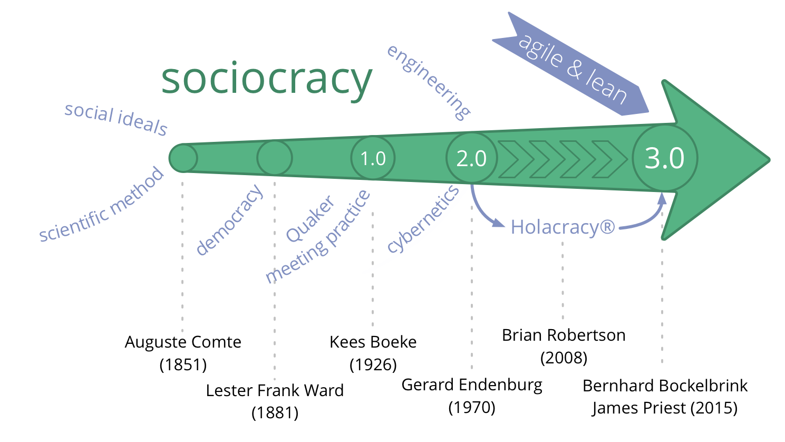
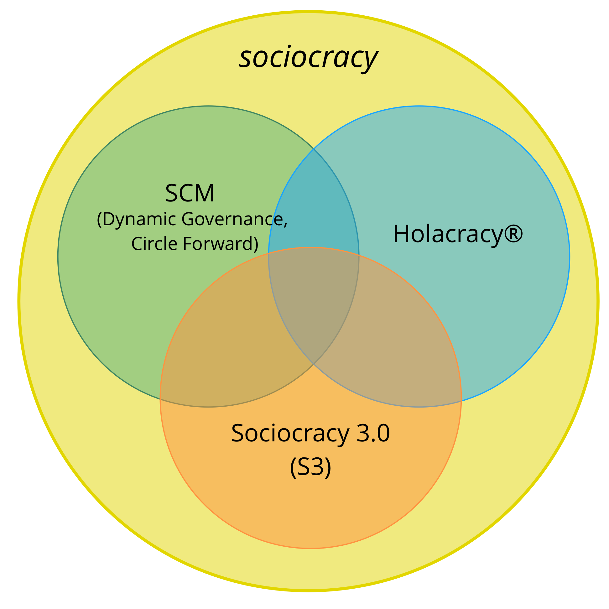
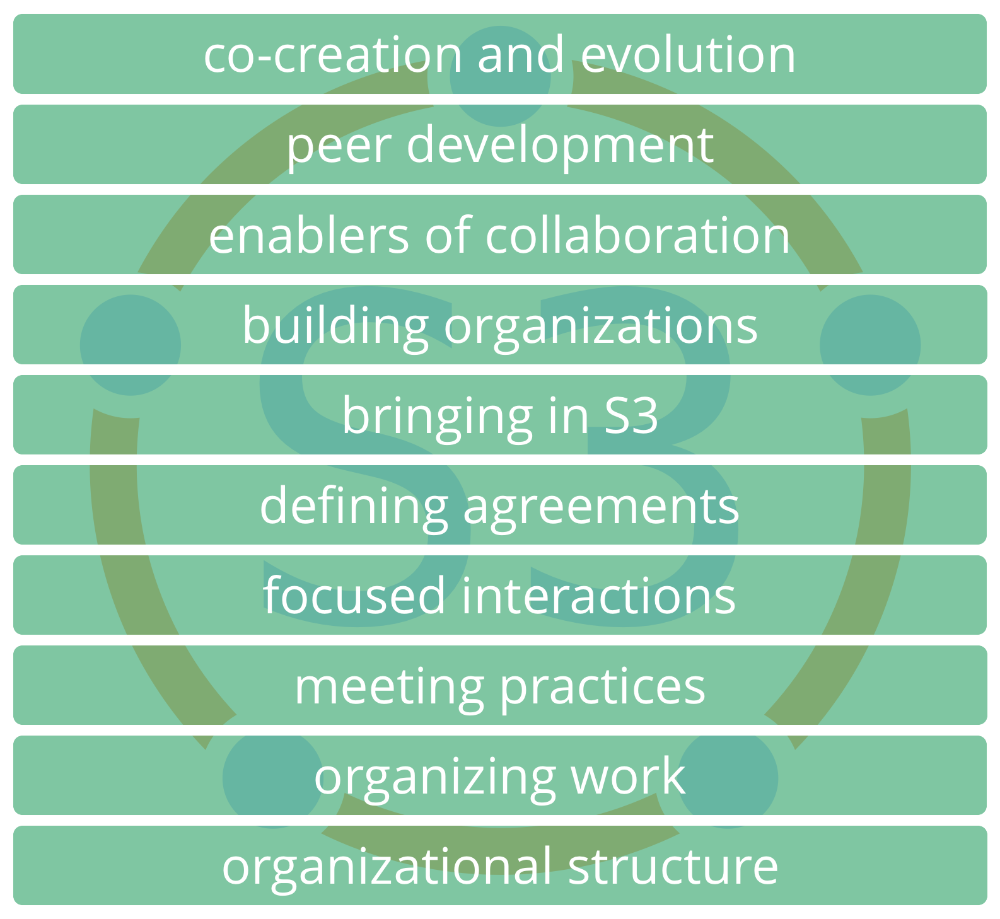
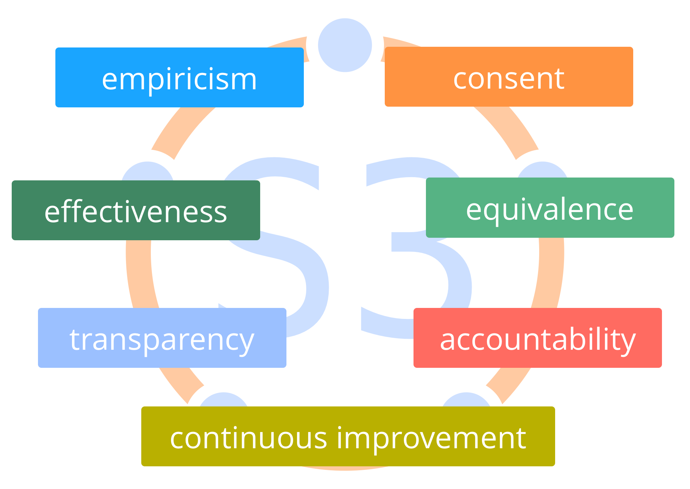
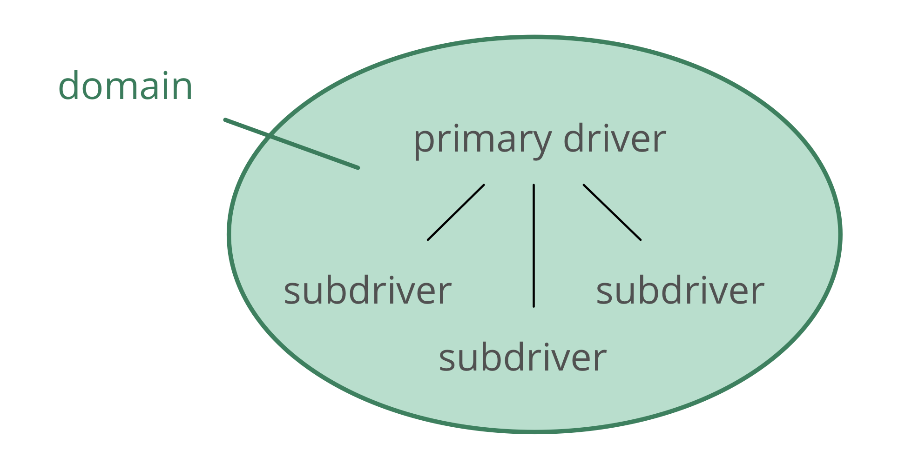

Introductie
Sociocracy 3.0 - A Practical Guide For Evolving Agile and Resilient Organizations
Effective Collaboration At Any Scale
Sociocratie 3.0 - oftewel S3 is een praktische gids om wendbare en veerkrachtige organisaties te ontwikkelen van elke schaalgrootte, van kleine start-ups tot aan grote internationale netwerken en landelijke samenwerkingen bestaande uit meerdere entiteiten. Het voorziet in een samenhangende manier om integriteit in een organisatie te laten groeien en een sociocratische, agile manier van denken te ontwikkelen.
S3 bestaat uit een zeer volledige verzameling van richtlijnen en werkwijzen (patronen), die effectief zijn gebleken voor organisatie om prestaties te verbeteren, op elkaar af te stemmen, zingeving te vergroten en welzijn te verbeteren.
Deze patronen helpen ontdekken hoe doelen het best bereikt kunnen worden en hoe om te gaan met complexe situaties., Stap voor stap, zonder de noodzaak aan radicale verandertrajecten, reorganisaties of lange termijn verander initiatieven:
Begin gewoon daar waar de grootste behoefte aan verandering ligt, selecteer een of meer patronen om te proberen, beweeg in je eigen tempo en ontwikkel vaardigheden terwijl je bezig bent.
Er zitten voor iedereen handige en relevante patronen bij ongeacht positie in de organisatie.
Sociocratie 3.0 is:
- flexibel: aanpasbare patronen, onafhankelijk inzetbaar en wederzijds versterkend, in te zetten op alle aspecten van samenwerking
- op principes gebaseerd: 7 kernprincipes uit agile en sociocratische manieren van samenwerken worden weerspiegeld in elk patroon
- gratis: gelicentieerd onder een Creative Commons Free Culture Licentie
Wat zit er in voor mij?
Sociocratie 3.0:
- biedt een samenhangende verzameling van op principes gebaseerde patronen om samen te werken, om te gaan met complexiteit, aan te blijven passen aan de context en te blijven ontwikkelen.
- ondersteunt mensen om in kleine stapjes beschikbare informatie te verwerken om werkprocessen, producten, diensten en vaardigheden continue te blijven verbeteren.
- helpt organisaties om zo goed mogelijk gebruik te maken van aanwezig talent en flexibele organisatiestructuren te ontwikkelen om de stroom van informatie en invloed goed af te stemmen op de waardestroom.
- biedt een organische, iteratieve aanpak voor verandering die daar begint waar de organisatie is en helpt te bewegen op een tempo dat passend is bij hen, de behoeften en de context waar zij zich in bevinden.
- maakt gebruik van de collectieve intelligentie van een groep.
- faciliteert de ontwikkeling van strategieën die “goed genoeg voor nu zijn” en “veilig genoeg om te proberen”.
- bevordert accountability en een gevoel van betrokkenheid.
- helpt zowel individuen als organisaties om te veranderen.
Sociocratie 3.0 kan worden toegepast binnen:
- start-ups
- MKB’s
- grote, internationale, netwerkorganisaties
- families
- door beleggers gefinancierde organisaties
- gemeenschappen
- en meer…
Inhoud van deze handleiding
- een klein beetje geschiedenis en een kort overzicht van enkele basisconcepten achter S3
- een beschrijving van alle patronen in S3
- een bijlage
- changelog
- info over auteurs en dank aan
- de licentie
- de Intentionele Commitment voor Beoefenaars en Leraren van Sociocratie 3.0 (ICPT, uit het Engels)
- woordenlijst en index
Invloeden en geschiedenis van Sociocratie 3.0

De letterlijke betekenis van de term sociocratie is “heerschappij van de kameraden”: socio — van het Latijnse socius — betekent “kameraad”, of “vriend”, en de toevoeging -cratie — van het oud Griekse (krátos) — betekent “macht”, of “heers”.
Het woord sociocratie kan worden herleid tot 1851, toen Auguste Comte voorstelde een wetenschappelijke benadering van de samenleving toe te passen: staten zouden worden bestuurd door een orgaan van wetenschappers die deskundigen zijn in de samenleving (die hij “sociologen” noemde). Volgens hem zou deze toekomst, hoewel nog niet haalbaar, onvermijdelijk zijn.
Een paar decennia later, gebruikte Lester Frank Ward het woord ‘sociocratie’ om de heerschappij van mensen met relaties met elkaar te beschrijven. In plaats van sociologen in het middelpunt, wilde hij meer macht en verantwoordelijkheid geven aan het individu, en stelde hij zich sociologen voor in een rol van onderzoeker en adviseur.
In 1926 heeft de Nederlandse onderwijshervormer en Quaker Kees Boeke een residentiële school opgezet op basis van consent. Medewerkers en studenten werden behandeld als gelijkwaardige deelnemers aan het bestuur van de school, alle beslissingen moesten voor iedereen aanvaardbaar zijn. Hij heeft deze versie van sociocratie gebouwd op de Quaker-beginselen en -praktijken en schreef in 1945 een plan, welke later werd gepubliceerd door zijn vrouw Beatrice Cadbury Boeke, “Sociocracy: Democracy as it might be”, waarin hij sociocratie omschrijft als een werkelijke democratische samenleving.
Gerard Endenburg, ook een Quaker en een student op de school van Boeke, wilde sociocratie toepassen in zijn gezinsbedrijf, Endenburg Elektrotechniek. Hij heeft de Sociocratische Kring Organisatie Methode (SKM) (later de “Sociocratische Methode”) gecreëerd en geëvolueerd, waarbij de vorm van sociocratie van Boeke wordt geïntegreerd met techniek en cybernetica. In 1978 heeft Endenburg het Sociocratisch Centrum in Utrecht (nu het Sociocratische Centrum in Rotterdam) opgericht als een manier om sociocratie in en buiten Nederland te promoten. Sinds 1994 zijn organisaties in Nederland die SKM gebruiken vrijgesteld van de wettelijke verplichting om een ondernemingsraad te hebben.
In de jaren negentig en begin 2000 raakten verschillende niet Nederlands sprekende mensen in aanraking met sociocratie, maar het was niet tot 2007 toen Sharon Villines en John Buck hun boek “Wij de mensen” lanceerden, dat sociocratie breed toegankelijk werd voor de Engelstalige wereld en vanaf daar is men het in verschillende andere talen gaan omschrijven.
Sociocratie is effectief gebleken voor veel organisaties en gemeenschappen rond de hele wereld, maar moet nog viraal gaan.
In 2014 zijn ** James Priest en Bernhard Bockelbrink** samengekomen om een set aan lesmaterialen te ontwikkelen, onder de Creative Commons license, waarin ideeën uit Sociocratie, Agile en Lean worden samengevoegd. Zij ontdekten dat organisaties van alle groottes een flexibel menu van werkwijzen en structuren nodig hebben – passend binnen hun specifieke context – die de ontwikkeling van een sociocratische en agile mindset mogelijk maakt om meer effectiviteit, afstemming, zingeving en welzijn te bereiken. De eerste versie van Sociocratie 3.0. is gelanceerd in maart 2015.
Liliana David is kort hierna onderdeel van het team geworden en zij werken regelmatig samen om zowel het raamwerk als de website verder te ontwikkelen.
Gezamenlijk proberen zij S3 beschikbaar en toepasbaar te maken voor zoveel mogelijk organisaties en verstrekken zij te gebruiken materialen en informatie onder een Creative Commons Free Culture License. Dit is te gebruiken door mensen die over Sociocratie 3.0 willen leren, het willen toepassen en er anderen over willen vertellen.
De Sociocratie 3.0 beweging
Aangezien de belangstelling voor de Sociocratie 3.0 snel groeit, ontstaat er ook een groter wordende gemeenschap van mensen met verschillende achtergronden – pioniers consultants, coaches, leerfacilitatoren en mensen die S3 in verschillende context toepassen – die hun waardering delen voor het transformationele potentieel van Sociocratie 3.0 om organisaties en hun leden te helpen bloeien. Velen wijden een deel van hun tijd aan het experimenteren met en delen van S3, en ze werken samen om van elkaar te leren en leggen ervaringen vast om de voortdurende ontwikkeling en evolutie van het kader en de verschillende toepassingen ervan te ondersteunen.
Waarom Sociocratie 3.0?
Sociocratie als bestuursvorm wordt al genoemd sinds 1851. Hier is op voortgebouwd en doorontwikkeld door veel verschillende mensen en organisaties, zoals Gerard Endenburg, het Sociocratisch Centrum (the Sociocracy Group, TSG) en Brian Robertson (HolacracyOne).
En toch is sociocratie buiten Nederland tot recentelijk altijd redelijk onbekend gebleven.
Wij houden van sociocratie, omdat wij zien dat organisaties en hun leden floreren als zij elementen ervan gebruiken om wat zij momenteel doen aan te vullen of aan te passen.
We houden ook van agile, lean, Kanban, de Core Protocols, NVC en vele andere ideeën. Wij geloven dat de wereld een betere plek wordt wanneer meer organisaties leren om gebruik te maken van de weldaad aan geweldige werkwijzen die vandaag de dag naar boven komen en leren deze te integreren in dat wat zij al kennen.
Om die reden besloten wij om een deel van onze tijd te besteden aan de ontwikkeling en evolutie van sociocratie, deze te integreren met vele andere ideeën met hoge potentie, om dit beschikbaar en toepasbaar te maken voor zoveel organisaties als mogelijk.
In zoverre erkennen wij de waarde van ene sterke identiteit, een radicaal andere manier van distributie en van het aanpassen van de * Sociocratische Kring Organisatie Methode* om de toepasbaarheid hiervan te vergroten.
De naam
De naam Sociocratie 3.0 toont zowel respect voor waar het vandaan komt als de significante stap vooruit die het ook is.
Het helpt ook om te voorkomen dat er wordt gedacht dat we een verkeerde voorstelling geven van de Sociocratische Kring Organisatie Methode, zoals gepromoot door het Sociocratisch Centrum.

Het nieuwe distributiemodel
Sociocratie 3.0 gebruikt een niet-gecentraliseerd distributiemodel. Dit is een paradigmawisseling in de manier waarop sociocratie naar mensen en organisaties wordt gebracht, en waar veel mensen zich aan kunnen relateren.
We ondersteunen “virale” distributie door twee hoofdstrategieën:
- Sociocratie 3.0 is open: Wij willen de groei van een levendig ecosysteem van manieren om het toe te passen en verschillende samen van Sociocratie bevorderen, waar mensen hun inzichten en de aanpassingen die ze maken voor hun specifieke context delen en bespreken. Om deze reden benadrukt Sociocratie 3.0 het belang van de onderliggende principes en nodigt expliciet uit tot creativiteit bij het vervoegen, aanpassen en veranderen ervan om beter aan te sluiten bij hun behoeften.
- Sociocratie 3.0 is gratis: Om de grens voor mensen en organisaties zo laag mogelijk te houden, bieden we gratis middelen aan onder een Creative Commons Free Culture License om Sociocratie 3.0te leren, gebruiken en overbrengen. Iedereen kan onze middelen gebruiken zonder onze uitdrukkelijke toestemming, zelfs in een commerciële context, of als basis voor het bouwen van zijn eigen bronnen [^zolang hij zijn nieuwe bronnen onder dezelfde licentie deelt]. Wij moedigen andere organisaties, adviseurs, coaches, leer facilitatoren en trainers aan ons voorbeeld te volgen en hun middelen ook vrij te maken.
De Evolutie van de Sociocratische Kring Organisatie Methode
Misschien moeten we dit duidelijk maken: Sociocratie 3.0 is niet specifiek gericht op de bestaande gemeenschap van mensen die de Sociocratische Kring Organisatie Methode verkenden, of op de Sociocracy Group (TSG). De Sociocratische Kring Organisatie Methode (SCM) is al goed ontwikkeld en veel mensen lijken er meestal blij mee te zijn.
Maar uit onze directe ervaring, zelfs voor de organisaties die al over sociocratie hebben gehoord, zijn er veel hindernissen die voorkomen dat zij echt investeren. Met Sociocratie 3.0 werken we actief aan het aanpakken en elimineren van de hindernissen die in de weg staan.
Vermindering van risico’s en weerstand
Sociocratie 3.0 ontmoet organisaties waar ze zijn en brengt ze op een reis van voortdurende verbetering. Er is geen radicale verandering of reorganisatie. Sociocratie 3.0 biedt een verzameling van onafhankelijke en op principes gebaseerde patronen die een organisatie één voor één kan binnenhalen om effectiever te worden. Alle patronen hebben betrekking op een set aan kernprincipes, zodat ze gemakkelijk kunnen worden aangepast aan de context.
Focus van doel (of Purpose) naar behoefte verschuiven
Sociocratie 3.0 beweegt de primaire focus van visie, missie, doelen of doel, naar de bron van motivatie en helpt de organisatie ontdekken en aanpakken wat ze nodig heeft. Organisaties die al behoefte, waarde of klant gedreven zijn, vinden dit onmiddellijk toegankelijk.
In Sociocratie 3.0, is het doel impliciet in alle gevallen – om waarde te stromen naar de drivers van de organisatie.
Samengeperst tot de essentie
Als je naar de normen kijkt, kan de Sociocratische Kring Organisatie Methode er groot en angstig uitzien. Door alleen op de essentiële punten te focussen, biedt Sociocratie 3.0 een lichtgewicht kader om aan te passen en zo nodig op voort te bouwen.
Dit betekent niet dat het allemaal makkelijk is: kiezen om Sociocratie 3.0 patronen te naar binnen te trekken vereist een investering in aanleren en afleren. Daarom is het belangrijk om alleen te pakken wat je nodig hebt, want het heeft geen zin om dingen te veranderen die al goed gaan.
Integratie met Agile en Lean denken
De Sociocratische Kring Organisatie Methode is een “lege” methode als het gaat om het uitvoeren van werk en het creëren van een cultuur van nauwe samenwerking. Veel organisaties passen Lean en Agile al toe en laten een voorkeur zien voor deze manier van werken en samenwerken. Wij geloven dat dit een goed idee is, dus is S3 ontwikkeld om makkelijk in Lean en Agile organisaties te passen.
Een nieuwe manier om een organisatiestructuur te evolueren
De organisatiestructuur volgens de Sociocratische Kring Organisatie Methode is gemodelleerd naar een hiërarchie van domeinen. We zien een toenemende opkomst van gemeenschappelijke multi-stakeholder omgevingen en de noodzaak van een bredere verscheidenheid aan patronen voor een organisatiestructuur. De evolutie van de organisatiestructuur gebeurt natuurlijk wanneer de stroom van informatie en invloed in een organisatie geleidelijk aan op de waardestroom wordt afgestemd. Sociocratie 3.0 biedt een verscheidenheid aan structurele patronen die kunnen worden gecombineerd om op flexibele wijze de nodige structuur te ontwikkelen.
James Priest, Bernhard Bockelbrink, Liliana David
Basisbegrippen
Voordat je in de inhoud duikt, overweeg om tijd te nemen om te leren over enkele basisconcepten achter S3:
- Wat is een patroon?
- De zeven principes
- Organisaties begrijpen:
- Drivers, waarde en verspilling
- Domeinen, delegeren en accountability
- Governance en Activiteiten
Voor een uitleg over termen verwijzen we naar de woordenlijst aan het eind.
Patronen
Een patroon is een sjabloon om een specifieke context succesvol te navigeren.
- S3 patterns are discovered through observing many organizations as they solve problems and respond to opportunities
- S3 patterns can be evolved and adapted to suit differing contexts
- the patterns are grouped by topic into ten categories

De zeven principes
Sociocratie is gebouwd op zeven principes die de organisatiecultuur vormgeven. Aangezien de zeven principes in alle patronen aanwezig zijn, is het van belang om deze te begrijpen om Sociocratie 3.0 patronen toe te passen en aan te passen.
Het beoefenen van S3 helpt mensen om deze essentiële waardes te waarderen, voor zowel individuen als organisaties.

Effectiviteit: Besteed alleen tijd aan wat je dichter bij het bereiken van je doelstellingen brengt.
Consent: Zoek bewust naar en benoem bezwaren op beslissingen en acties en zoek naar oplossingen voor deze bezwaren.
Empirie: Test alle veronderstellingen door te experimenteren en te reviseren.
Continue verbeteren: Incrementeel veranderen zodat gestaag empirisch leren kan plaatsvinden.
Gelijkwaardigheid: Betrek mensen bij het nemen van de beslissingen die hen raken.
Transparantie: Alle informatie toegankelijk maken voor iedereen in een organisatie, tenzij er een goede reden is om dit niet te doen.
Accountability: Reageer wanneer er iets nodig is, houd je aan afspraken, en neem verantwoordelijkheid over het beloop van de organisatie.
Het principe van Accountability
Reageer wanneer er iets nodig is, houd je aan afspraken, en neem verantwoordelijkheid over het beloop van de organisatie.
Handel binnen de kaders van elke overeenkomst van toepassing op het domein waar jij de verantwoording voor draagt, inclusief die organisatie als geheel, teams waar jij bij hoort en rollen die jij invult.
Elk lid van de organisatie is verantwoordelijk voor een effectieve reactie op drivers van de organisatie, zowel in het uitvoeren van werk als in het mogelijk maken van een effectieve samenwerking.
Individuen zijn ook verantwoordelijk voor hun werk, voor permanent blijven leren en ontwikkelen en voor het ondersteunen van elkaar.
Iedereen in een organisatie is verantwoordelijk voor de overeenstemming van acties op de waarden van de organisatie.
Organisaties begrijpen
Drivers
Een driver is het motief van een persoon of een groep om te reageren op een specifieke situatie.
Drivers:
- kunnen worden gebruikt om doelen, doelstellingen, missies, visies, streven en de bedoeling af te leiden
- kan veranderen met de tijd
Drivers, waarde en verspilling
Waarde is het belang of nut van iets in relatie tot de driver.
Verspilling is alles dat onnodig is of in de weg staat om op een (meer) effectieve manier te reageren op de driver.
By adopting the concept of value and waste, many practices and ideas from lean production and lean software development can be utilized by organizations pulling in S3 patterns:
- value stream mapping
- various strategies for eliminating waste
- the Kanban Method
Domeinen
Een domein een afgebakend gebied van invloed, activiteit en besluitvorming binnen een organisatie.
Alle domeinen vallen binnen het algemene domein van een organisatie en kunnen overlappen en/of volledig binnen andere domeinen vallen.
Domeinen worden gedelegeerd aan mensen (bijvoorbeeld aan een eenheid, afdeling, team of aan individuen), die aansprakelijk en verantwoordelijk zijn voor het domein, binnen de vastgestelde kaders van hun invloed en autonomie.

Domeinen delegeren
Degenen die een domein delegeren (de delegatoren) behouden nog steeds de algehele verantwoordelijkheid voor dat domein, wijzen middelen toe en definiëren vaak:
- de behoefte van de organisatie waarvoor het domein is ontwikkeld om op te reageren
- kernverantwoordelijkheden (belangrijkste op te leveren resultaten, eventuele kritieke risico’s om te beheren, andere essentiële taken en te nemen besluiten die worden gedelegeerd)
- kaders van de autonomie en invloed voor degenen waaraan het domein wordt gedelegeerd (de gedelegeerden), meestal gerelateerd aan de organisatie zelf (bijv. afhankelijkheden, betrokkenheid van de delegator, rapporteren, etc.)
Drivers en domeinen
Het is ook mogelijk om een domein te begrijpen in relatie tot drivers van de organisatie:
- the domain’s primary driver - the main driver the people accounting for that domain (the delegatees) respond to
- the set of subdrivers the organization may benefit from addressing when responding to the primary driver, which include:
- key responsibilities (any driver following directly from the domain’s primary driver)
- drivers for constraints of the domain (which typically relate to the organization’s wider context)

Governance en Activiteiten
S3 wil productiviteit mogelijk maken door mensen vrij te maken om zoveel mogelijk zelf te doen en te beslissen, en dit tegelijkertijd te doen in samenwerking om zo een succesvolle en effectieve organisatie te waarborgen.
Meer autonomie van individuen en teams vereist duidelijke overeenkomsten (dat wil zeggen richtlijnen en kaders) om een soepele samenwerking tussen deze teams en individuen mogelijk te maken en die het bereiken van zowel langetermijn- als kortetermijndoelstellingen ondersteunen. Regelmatige reviews en een geleidelijke ontwikkeling van overeenkomsten zorgen ervoor dat ze blijven passen bij het doel.
Hoewel besluiten met korte termijn gevolgen gemakkelijk ter plaatse kunnen worden gewijzigd, profiteren overeenkomsten die meer consequenties kunnen hebben voor de lange termijn van een participatief en weloverwogen besluitvormingsproces.
Dergelijke overeenkomsten moeten worden vastgelegd, zowel om ze te onthouden als om effectieve reviews te ondersteunen en om te worden doorgegeven aan degenen die het raakt (die het liefst ook betrokken zijn bij de ontwikkeling en evolutie van deze overeenkomsten).
Het is daarom waardevol om een onderscheid te maken tussen twee categorieën activiteiten in een organisatie, waarvan we één governance noemen, en de andere activiteiten:
Governance in een organisatie (of een domein) is het vaststellen van doelstellingen en het nemen en ontwikkelen van besluiten die ervoor moeten zorgen dat deze doelstellingen ook worden bereikt.
Activiteiten is het doen en organiseren van werk en dagelijks activiteiten binnen de kaders die zijn gedefinieerd door governance.
Voor elk domein in een organisatie is er een bestuursorgaan: mensen met een mandaat om overeenkomsten te maken en te ontwikkelen die bepalen hoe de mensen die het werk doen in dat domein waarde creëren.
Er zijn veel manieren om werk en governance te verdelen. Soms is het bestuursorgaan één persoon, bijvoorbeeld in het geval van een team lead, en soms is het een groep mensen, bijvoorbeeld in een cirkel waarin alle leden van de cirkel de verantwoordelijkheid voor governance delen binnen de kaders van het domein.
Governance besluiten kaderen acties en sturen toekomstige beslissingen.
Dit omvat:
- definiëren van domeinen
- invloed delegeren aan mensen
- toewijzing van middelen en capaciteit
- specificeren en prioriteren van op te leveren resultaten
Governance besluiten kunnen op elk moment en op elke plaats worden genomen, niet alleen in een specifieke vergadering, hoewel een regelmatige vergadering voor het maken en ontwikkelen van overeenkomsten vaak een goed idee is.
Gerelateerde Concepten
Zelfsturing: Mensen die zichzelf besturen binnen de kaders van een domein.
Semi-autonomie: De autonomie van mensen om waarde te creëren binnen hun domein, verder beperkt door hun eigen governance besluiten en bezwaren (waaronder die van de delegator en van vertegenwoordigers).
Zelforganisatie: Elke activiteit of proces waarmee mensen hun dagelijkse werk organiseren zonder invloed van een externe tussenpersonen, en binnen kaders die zijn gedefinieerd door governance. In elke organisatie of team bestaan zelforganisatie en externe invloed naast elkaar.
Afhankelijk van de kaders die de delegator stelt, hebben teams min of meer de bevoegdheid om governance te doen en te bepalen hoe ze hun activiteiten organiseren, en zijn ze dus min of meer zelfsturend en zelforganiserend.